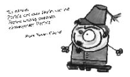

Hoca Tahsin Efendi (1812-1880)
Son dönem Osmanlı düşünürlerinden. Psikoloji Yahut İlm-i Ruh adlı eseriyle Türkiye’de psikolojinin gelişimine önemli bir katkı sağlayan Hoca Tahsin Efendi, o zamanlar Darülfünun olarak bilinen İstanbul Üniversitesi’nin ilk rektörüdür. Darülfünun’da ramazan geceleri ders veren Hoca Tahsin, çıkan bir müdür krizi sonucu yapılan baskılara dayanamayarak görevinden ayrılmış, ayrılırken de, “Bize cahillik gerek.” diyerek eğitime tövbe etmiştir.

Kendisine “Etme hoca, tövbe et tövbe etmeyeceğine.” dense de çok sinirlenen Hoca Tahsin’in görevinden ayrılırken söylediği şu sözler, Türk eğitim tarihinde yer etmiştir:
“Suçumuz, olgunluk kazanmakmış, oysa bize cehalet gerek, anladım: Allahım, bilim öğrenme suçundan tövbeler olsun!”
Meşhur şiirinden beyitler…
Can kuşum yokluk âlemini terk etmek ister.
Bu bedenle yetinmez;
çünkü bu beden artık eski bir kafestir.
Her şeyden soyunur ve Allah’a yönelir;
sonsuzluk mülkünü arar.
Lâhut âlemine döner ve oraya yükselmek ister.
Çünkü en son murâdı
Allah’ın zâtına kavuşmaktır
Sonuçta, köhne elbisen cisminden ayrılır
Ömür halkam, sabah akşam
neredeyse tükenecektir
Âcil deva ölümden önce tövbe etmektir.